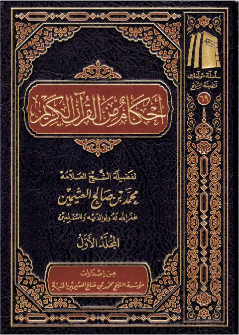

أحكام من القرآن الكريم- ط 2
Authors: محمد بن صالح العثيمين
Publishers: مدار الوطن للنشر
Download Downloads need an internet connection.
- Published
- 2013م 1434هـ
- Country
- الرياض، السعودية
- Edition
- 2
- Volumes
- 2
- Pages
- 1346
- Type
- كتاب
- Category
- التفسير وعلوم القرآن
Description
**▫️ العنوان: أحكام من القرآن الكريم- ط 2** ▪️ المؤلف: #محمد_بن_صالح_العثيمين ▫️ الناشر: #مدار_الوطن_للنشر ▪️ تاريخ النشر: 2013م 1434هـ ▫️ بلد النشر: الرياض، #السعودية ▪️ الطبعة: 2 ▫️ عدد الأجزاء: 2 ▪️ الصفحات: 1346 ▫️ نوع الوعاء: #كتاب ▪️ التصنيف الرئيسي: #التفسير_وعلوم_القرآن ۪